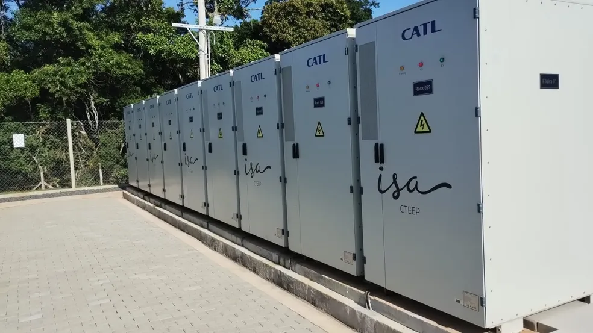

Nossos Projetos:
Conheça nossos projetos e saiba como você pode fazer parte.
Projeto de Energia Solar Comunitária
Desenvolver um projeto de instalação de painéis solares em comunidades de baixa renda ou áreas rurais, onde o acesso à eletricidade é limitado. Esse projeto pode ser financiado por meio de parcerias público-privadas ou crowdfunding, visando fornecer energia limpa e acessível para populações que atualmente dependem de fontes poluentes e caras.
Para mais informações, entre em contato conosco:
Desenvolvimento de Tecnologias de Armazenamento de Energia
Investir em pesquisa e desenvolvimento de tecnologias de armazenamento de energia, como baterias de íon de lítio de baixo custo ou sistemas de armazenamento de energia baseados em hidrogênio. Essas tecnologias podem ajudar a superar os desafios de intermitência associados à energia solar e eólica, tornando-as mais confiáveis e acessíveis para uso em larga escala.
Para mais informações, entre em contato conosco:
 ParticipePrograma de Educação em Energia Renovável
Implementar um programa de educação em energia renovável em escolas e comunidades, fornecendo informações sobre os benefícios das energias limpas e incentivando o uso responsável da energia. Isso pode incluir workshops, palestras, atividades práticas e projetos educacionais sobre energia solar, eólica, hidrelétrica e outras fontes renováveis, visando conscientizar e capacitar as pessoas a adotarem práticas sustentáveis de consumo de energia.
Para mais informações, entre em contato conosco:
Participe